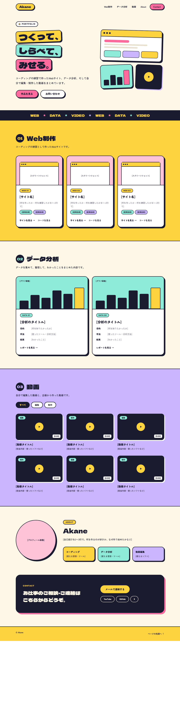
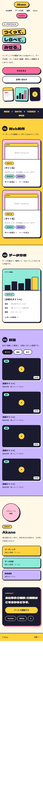

WEB 01
ポートフォリオ
作ったもの、勉強したものをまとめるポートフォリオサイトを作りました。コーディングの練習も兼ねています。

作ったもの
Web・データ・動画の作品をまとめた、自己紹介のためのサイトです。仕事を探している人や、仕事を依頼したい人が、作品と自己紹介を1つのページで見られるように、トップページに、作品の一覧・About・連絡先を並べました。作品ごとに、詳細ページも用意しています。
こだわった点
-
レイアウトとデザイン
デザイン案は、AI（Claude）に作ってもらいました。ポップな雰囲気にしたい、スマホでも見やすくしたい、という方向は自分で決めて、HTML と CSS に落とし込む作業は、自分で行いました。
-
動きと操作
画像が読み込めないときに、代わりの枠を見せる処理を JavaScript で書きました。作品の絞り込みなど、動きのある機能は、これから追加していく予定です。
-
コードの整理
色や余白を CSS 変数にまとめ、クラス名は役割がわかる名前にしました。ファイルは css / js / img に分けて、詳細ページ用の CSS も別ファイルにしています。
画面


使った技術と理由
- HTML
- Webの土台となる基本の技術なので、最初に身につけたいと考えて選びました。見出し・リスト・記事など、内容に合ったタグを選んで、構造がわかりやすいページにしています。
- CSS
- 見た目を自分で作り込める基本の技術なので、練習に向いていると考えました。色や余白を変数にまとめ、画面の幅に合わせて並びが変わるレイアウトにしています。
- JavaScript
- ページに動きを付ける基本の技術として、まず小さく使ってみました。画像が読み込めないときに、代わりの枠を表示する処理を書いています。
苦労したことと学んだこと
0からコードを書くのは、思っていたよりずっと難しく、Claude（AI）にたくさん助けてもらいながら作りました。ただ、書いてもらったコードは、「なぜこう書くのか」を1つずつ確認して、自分で理解することを心がけました。
特に、次のようなところでつまずき、原因を調べながら直しました。
- YouTube の動画が、エラーで表示されなかった → ファイルを直接開いていたのが原因で、ローカルサーバーで確認するようにした
- 画像が無いと、見た目が崩れた → 読み込みに失敗したとき、代わりの枠を見せる処理を JavaScript で書いた
- カードの高さが、そろわなかった → flexbox の仕組みを調べて、直した
AIに頼ることは、悪いことではないと考えています。大切なのは、頼ったあとに、自分の言葉で説明できる状態にすることだと思っています。これからも、理解することは、続けていきます。